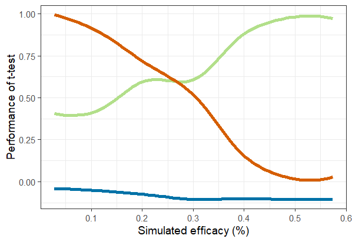
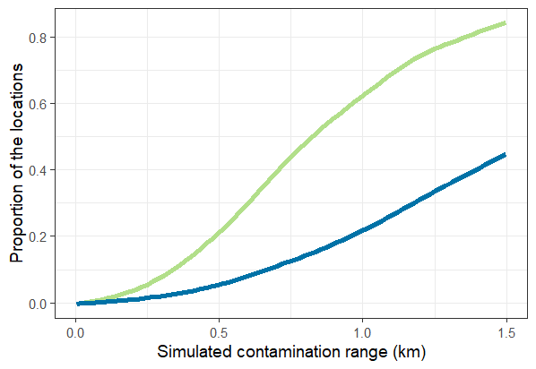
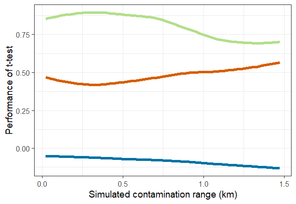

Use Case 07: Power and sample size calculations allowing for spillover
Usecase7.RmdContamination between the arms of a trial leads to downward bias in the estimates of efficacy In the case of malaria, this spillover is mainly caused by mosquito movement, and is therefore expected to be greatest near to the boundary between the trial arms.
Because the effective distance over which substantial spillover occurs is generally not known, sensitivity analyses must be used to get an idea of how great these effects are likely to be. The following workflow, similar to that used for Use Case 3, explores the likely bias and loss of power for one specific simulated setting.
In this simple example, spatially homogeneous background disease
rates are assigned, using propensity <- 1 A small number
of simulations is specified for testing (here 2, a much larger number,
at least several thousands is used for the definitive analysis). In this
example, a fixed value for the outcome in the control arm, the target
ICC of the simulations, and the number of clusters in each arm of the
trial. input. Efficacy is sampled from a uniform(0, 0.6) distribution,
and the simulated spillover interval from a uniform(0, 1.5km)
distribution.
library(CRTspat)
# The locations only are taken from the example dataset. The cluster, arm, and outcome assignments are replaced
example <- readdata("exampleCRT.txt")
trial <- example$trial[ , c("x","y", "denom")]
trial$propensity <- 1
nsimulations <- 2
CRT <- CRTsp(trial)
library(dplyr)
outcome0 <- 0.4
ICC <- 0.05
c <- 25
set.seed(7)
effect <- runif(nsimulations,0,0.6)
# Data frame of input spillover interval
spillover_interval <- runif(nsimulations, min = 0, max = 1.5)
input <- data.frame(effect = effect, spillover_interval = spillover_interval)A user function is defined for randomizing and analysing each simulated trial
CRTscenario7 <- function(input) {
ex <- specify_clusters(CRT, c = c, algo = "kmeans") %>%
randomizeCRT() %>%
simulateCRT(effect = input[["effect"]], generateBaseline = FALSE, outcome0 = outcome0,
ICC_inp = ICC, spillover_interval = input[["spillover_interval"]],
matchedPair = FALSE, scale = "proportion", denominator = "denom", tol = 0.01)
sd <- spillover_interval/(2 * qnorm(0.975))
contaminate_pop_pr_input <- sum(abs(ex$trial$nearestDiscord) <
0.5 * input[["spillover_interval"]])/nrow(ex$trial)
contaminate_pop_pr_sd <- sum(abs(ex$trial$nearestDiscord) <
input[["spillover_interval"]]/(2 * qnorm(0.975)))/nrow(ex$trial)
examplePower = CRTpower(trial = ex, desiredPower = 0.8,
effect=input[["effect"]], yC=outcome0, outcome_type = 'd', ICC = ICC, c = c)
nominalpower <- examplePower$geom_full$power
Tanalysis <- CRTanalysis(ex, method = "T")
value <- c(
effect = input[["effect"]],
contaminate_pop_pr_input = contaminate_pop_pr_input,
contaminate_pop_pr_sd = contaminate_pop_pr_sd,
spillover_interval = input[["spillover_interval"]],
nominalpower = examplePower$geom_full$power,
Pvalue_t = Tanalysis$pt_ests$p.value,
effect_size_t = Tanalysis$pt_ests$effect_size)
return(value)
}The results are collected in a data frame and post-processed to classify the outcomes according to whether they represent either Type I errors or Type II errors
results_matrix <- apply(input, MARGIN = 1, FUN = CRTscenario7)
results <- as.data.frame(t(results_matrix))
results$significant_t <- ifelse((results$Pvalue_t < 0.05), 1, 0)
results$typeIerror <- ifelse(results$significant_t == 1 & results$effect == 0, 1,
ifelse(results$effect == 0, 0 , NA))
results$typeIIerror <- ifelse(results$significant_t == 0, ifelse(results$effect > 0, 1, NA), 0)
results$bias_t <- with(results, ifelse(significant_t,effect_size_t - effect,- effect))Analysis by simulated true efficacy
The results are grouped by ranges of efficacy, for each of which the ratio of the number of simulations giving statistically significant results to the expected number can be calculated.
results$effect_cat <- factor(round(results$effect*10))
by_effect <- results[results$effect > 0, ] %>%
group_by(effect_cat) %>%
summarise_at(c("effect","significant_t", "nominalpower", "bias_t", "typeIIerror"),
mean, na.rm = TRUE)
by_effect$power_ratio <- with(by_effect, significant_t/nominalpower)
library(ggplot2)
theme_set(theme_bw(base_size = 14))
ggplot(data = by_effect, aes(x = effect)) +
geom_smooth(aes(y = power_ratio), color = "#b2df8a",se = FALSE) +
geom_smooth(aes(y = typeIIerror), color = "#D55E00",se = FALSE) +
geom_smooth(aes(y = bias_t), color = "#0072A7",se = FALSE) +
xlab('Simulated efficacy (%)') +
ylab('Performance of t-test')Despite the spillover, the t-test performs similarly to expectations across the range of efficacies investigated (Figure 7.1)

Fig 7.1 Performance of
t-test by efficacy purple line: ratio of power:nominal power; green
line: type II error rate; blue line : bias.
Analysis by simulated spillover interval
An analogous analysis, to that of performance relative to efficacy, can be carried out to explore the effect of the simulated spillover interval.
ggplot(data = results, aes(x = spillover_interval)) +
geom_smooth(aes(y = contaminate_pop_pr_input), color = "#b2df8a",se = FALSE, size = 2) +
geom_smooth(aes(y = contaminate_pop_pr_sd), color = "#0072A7",se = FALSE, size = 2) +
xlab('Simulated spillover interval (km)') +
ylab('Proportion of the locations')
results$theta_cat <- factor(round(results$spillover_interval*10))
by_theta <- results[results$effect > 0, ] %>%
group_by(theta_cat) %>%
summarise_at(c("spillover_interval","significant_t", "nominalpower", "bias_t", "typeIIerror"),
mean, na.rm = TRUE)
by_theta$power_ratio <- with(by_theta, significant_t/nominalpower)
ggplot(data = by_theta, aes(x = spillover_interval)) +
geom_smooth(aes(y = power_ratio), color = "#b2df8a",se = FALSE) +
geom_smooth(aes(y = typeIIerror), color = "#D55E00",se = FALSE) +
geom_smooth(aes(y = bias_t), color = "#0072A7",se = FALSE) +
xlab('Simulated spillover interval (km)') +
ylab('Performance of t-test')The relationships between the simulated spillover interval and the corresponding proportion of the locations in the trial (Figure 7.2).

Fig 7.2 Proportion of
locations in simulated spillover interval green line: zone defined by
gamma_inp; blue line : zone defined by sd.
The spillover results in a loss of power, and increased negative bias in efficacy estimate, but these effects are rather small (Figure 7.3).
The potential for using the CRTanalysis() function to
model the spillover and hence correct the naive efficacy estimate (from
a t-test) can also be explored (see Use Case
5 and Multerer
et al. (2021b).

Fig 7.3 Performance of
t-test by spillover interval purple line: ratio of power:nominal power;
green line: type II error rate; blue line: bias.